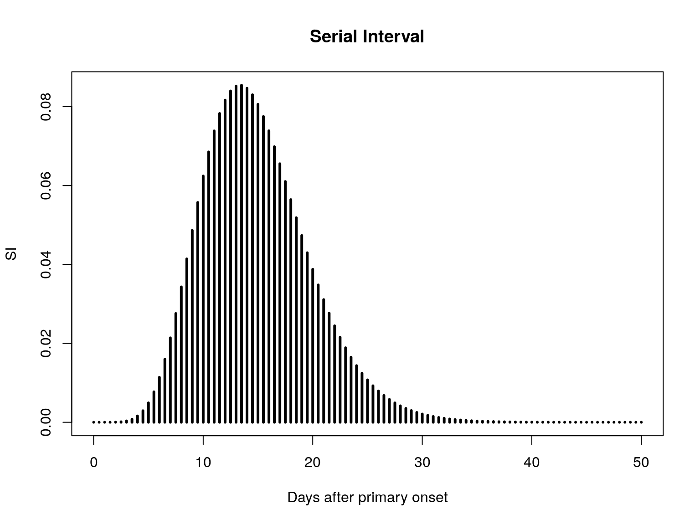
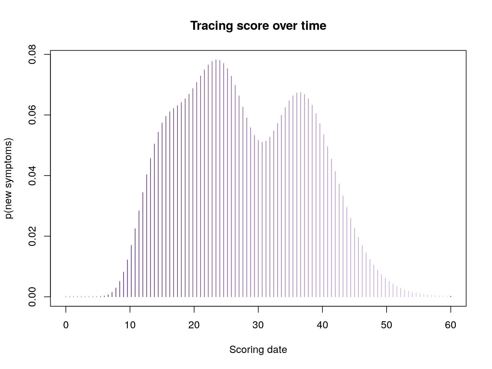
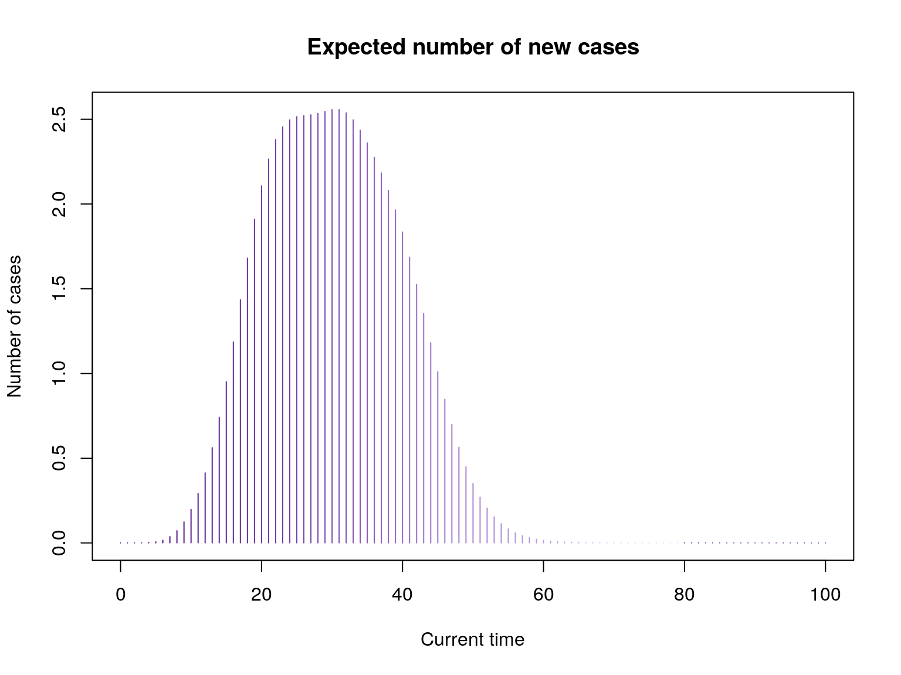
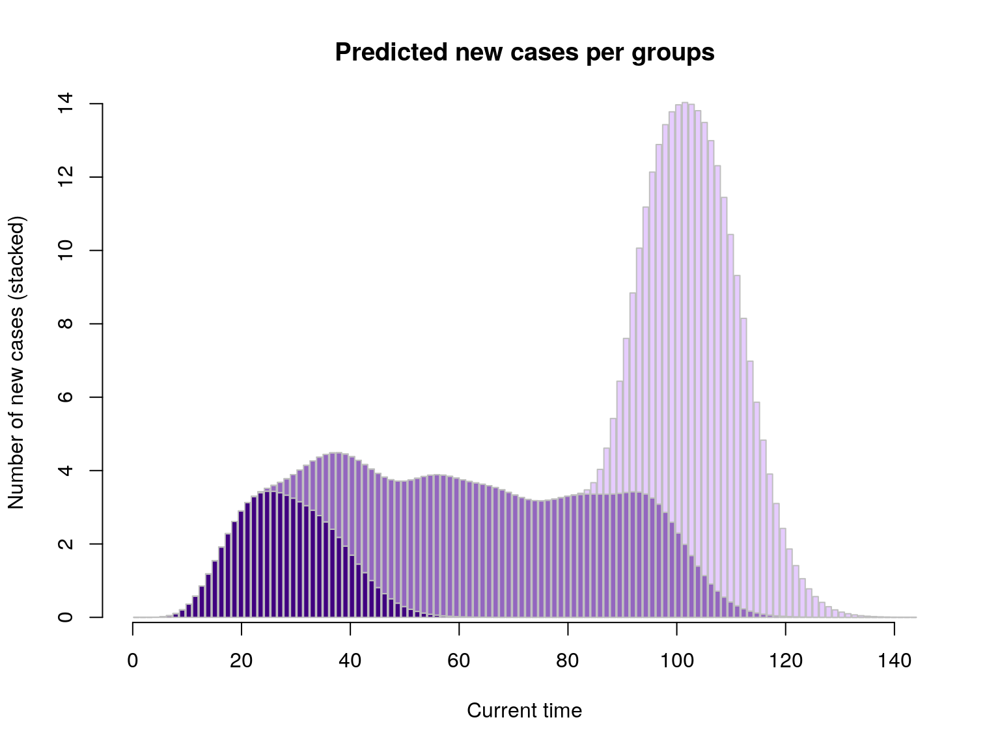

To benefit from the latest features and bug fixes, install the development, github version of the package using:
devtools::install_github("reconhub/tracer")Note that this requires the package devtools installed.
What does it do?
The main features of the package include:
contact_score: generate a scoring function which computes the tracing score for an individual exposed to cases (a ‘contact’), for specified dates.group_score: generate a scoring function which computes the tracing score for a set of individuals exposed to cases (‘contacts’), for specified dates.
Resources
Vignettes
An overview of tracer is provided below in the worked example below. More detailed tutorials will be distributed as vignettes with the package; to list them, type:
vignette(package = "tracer")
#> no vignettes foundWebsites
The following websites are available:
The official tracer website, providing an overview of the package’s functionalities, up-to-date tutorials and documentation:
http://www.repidemicsconsortium.org/tracer/The tracer project on github, useful for developers, contributors, and users wanting to post issues, bug reports and feature requests:
http://github.com/reconhub/tracerThe tracer page on CRAN:
https://CRAN.R-project.org/package=tracer
Getting help online
Bug reports and feature requests should be posted on github using the issue system. All other questions should be posted on the RECON forum:
http://www.repidemicsconsortium.org/forum/
A quick overview
The following worked example provides a brief overview of the package’s functionalities.
Input parameters
tracer needs the following input parameters:
R: the average effective reproduction number, i.e. the number of secondary infections per caselambda: the average number of contacts (infectious or not) reported by casesw: the serial interval distribution, i.e. the (discrete) distribution of the time between primary and secondary symptoms.
In practice, w will often need to be discretized from a continuous (typically gamma) distribution, of parameters assumed known. We illustrate this procedure using the distcrete package:
lambda <- 2.5
R <- 1.8
library(distcrete)
SI.info <- distcrete("gamma", 1L, w = 0, 10, 0.65)
SI.info
#> A discrete distribution
#> name: gamma
#> parameters:
#> shape: 10
#> rate: 0.65
SI <- SI.info$d
plot(SI, xlim = c(0, 50), type = "h", lwd = 3, main = "Serial Interval",
xlab = "Days after primary onset")
Tracing score for individual contact
The function contact_score will generate a scoring function, which only depends on the date at which the scoring is computed (t), and the date of the last visit to this contact:
library(tracer)
args(contact_score)
#> function (x, R, lambda, w)
#> NULLFor instance, using the parameters defined above, and 3 exposures to cases with onset on days 3, 12, and 34:
f <- contact_score(c(3, 12, 24), R, lambda, SI)
f
#> function (t, visit_days_ago = 1L)
#> {
#> if (visit_days_ago < 1L) {
#> stop("'visit_days_ago' cannot be less than 1.")
#> }
#> days_ago_to_consider <- seq(0, visit_days_ago - 1L, by = 1L)
#> days_list <- lapply(days_ago_to_consider, function(i) t -
#> i)
#> out <- double(length(t))
#> for (days in days_list) {
#> rates <- Rc * vapply(days, function(day) sum(w(day -
#> x)), double(1))
#> out <- out + 1 - exp(-rates)
#> }
#> out
#> }
#> <environment: 0x55e308bef3d8>
## score on day 10:
f(10)
#> [1] 0.01528583
## score on days 24, 25, 26
f(24:26)
#> [1] 0.07796896 0.07592696 0.07186847
## plotting scores over time
plot(f, xlim = c(0, 60), type = "h", col = pal1(80),
main = "Tracing score over time",
xlab = "Scoring date", ylab = "p(new symptoms)")
Tracing score for group of contacts
The score of a group of individuals is defined as the expected number of new cases on a given day. The function group_score achieves this computation. It generalises contact_score to a set of contacts, stored as a list. Each component of the list is a vector of dates of onset of the source cases. group_score returns a scoring function which only depends on the date at which the scoring is computed (t), and the dates of the last visit of the contacts.:
args(group_score)
#> function (x, R, lambda, w)
#> NULLWe simulate random exposures data for 30 individuals:
set.seed(1)
x <- replicate(30, sample(0:30, sample(1:5), replace = TRUE))
head(x)
#> [[1]]
#> [1] 27 29
#>
#> [[2]]
#> [1] 21 11 23 15
#>
#> [[3]]
#> [1] 6 20 3 8
#>
#> [[4]]
#> [1] 14 18
#>
#> [[5]]
#> [1] 3 22 12
#>
#> [[6]]
#> [1] 24 0 14 22 21
g <- group_score(x, R, lambda, SI)
g(c(10,20,30)) # Exp nb of new cases at t=10,20,30
#> [1] 0.1973302 2.1070930 2.5574013
plot(g, xlim = c(0, 100), type = "h", , col = pal1(80),
main = "Expected number of new cases",
xlab = "Current time", ylab = "Number of cases")
We can extend this to several groups with different sizes and incidence dynamics:
set.seed(1)
x1 <- replicate(30, sample(0:20, sample(1:6), replace = TRUE)) # early wave
x2 <- replicate(140, sample(15:70, sample(1:3), replace = TRUE)) # large middle wave
x3 <- replicate(140, sample(65:80, sample(1:4), replace = TRUE)) # late wave
list_g <- lapply(list(x1, x2, x3), group_score, R, lambda, SI)
pred_nb_cases <- sapply(list_g, function(g) g(1:120))
barplot(t(pred_nb_cases), col = pal1(3), border = "grey",
main = "Predicted new cases per groups", xlab = "Current time",
ylab = "Number of new cases (stacked)")
axis(side=1)
Contributors (by alphabetic order):
Please note that this project is released with a Contributor Code of Conduct. By participating in this project you agree to abide by its terms.
Maintainer: Thibaut Jombart (thibautjombart@gmail.com)